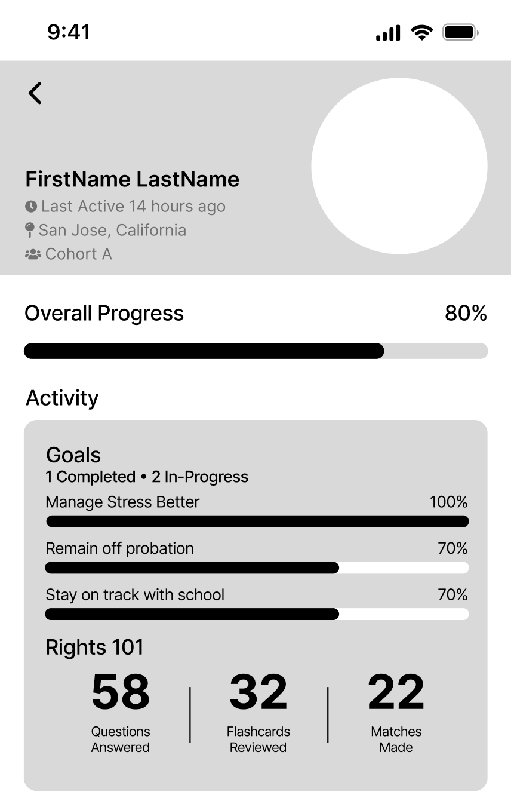
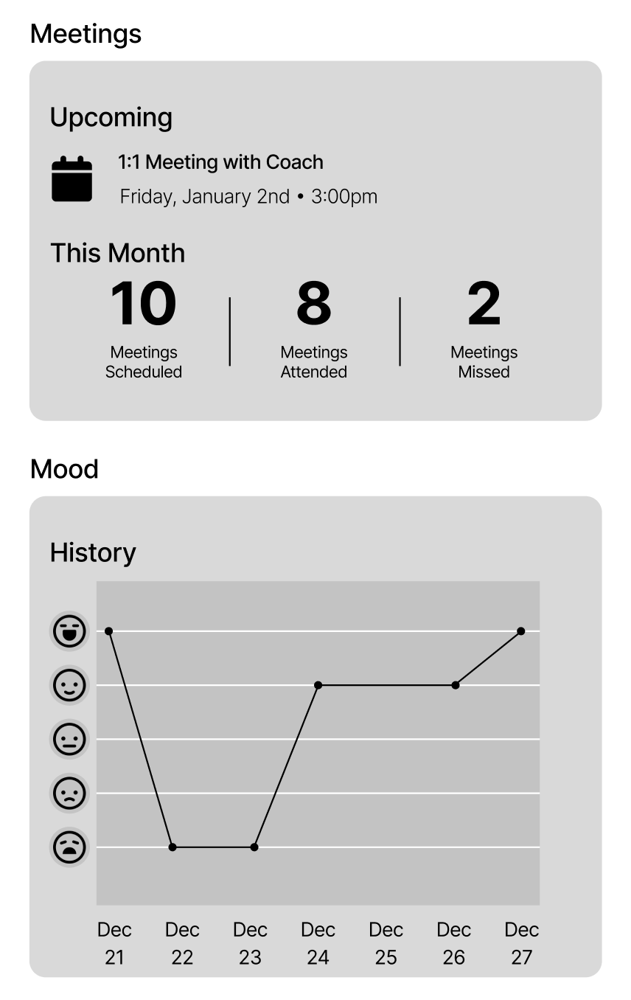
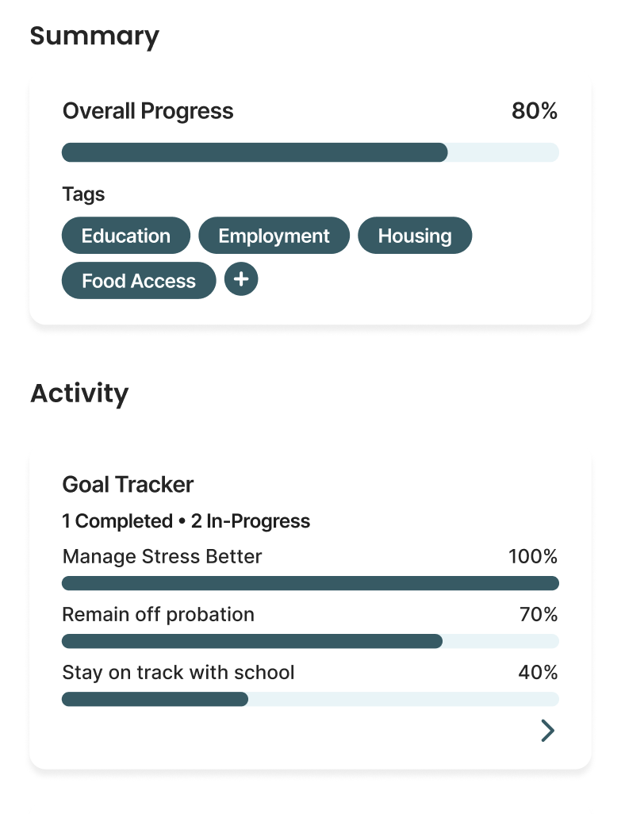
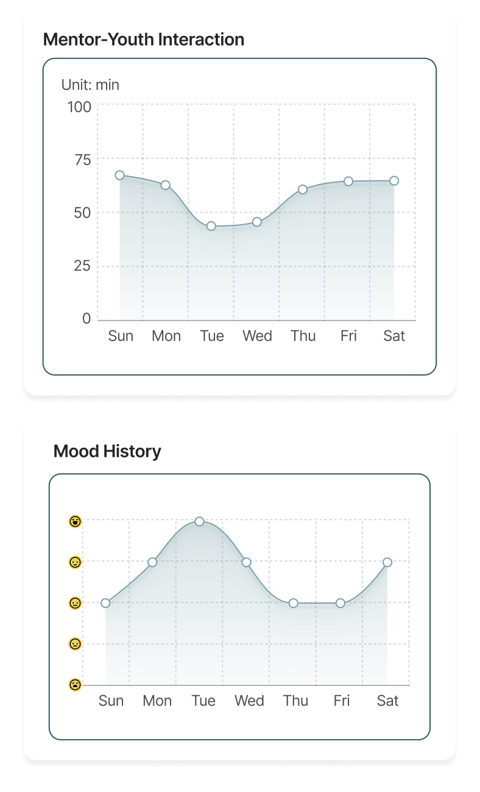
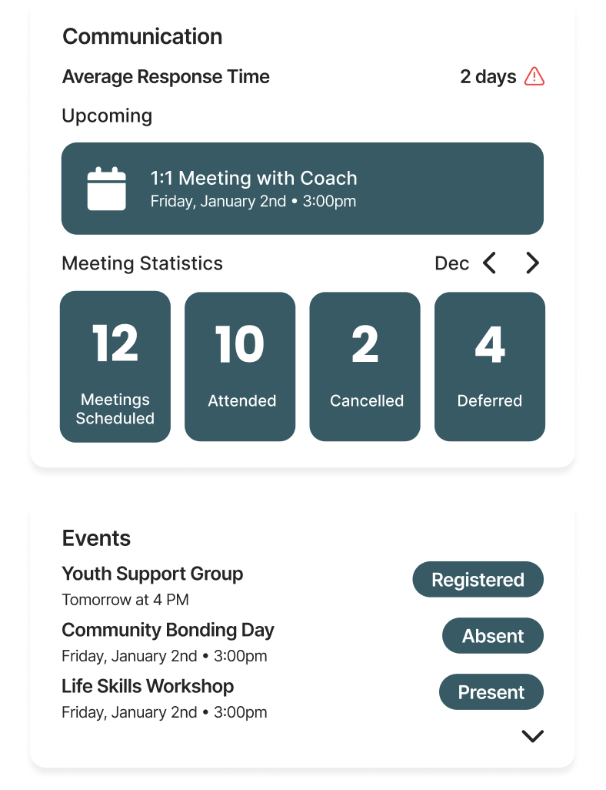

01
Expanding sections in the youth report
In testing, many case managers expressed wanting to see more metrics presented in the youth reports to get a more accurate idea of how youth members are performing.
BeforeLimited report


AfterThe redesigned youth report adds crucial information like number of events attended, appointments missed, app usage, and mentor–youth interaction.



![Melissa Poling]()